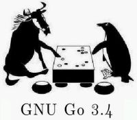

glGo supports connecting to any GTP engine and to play with a computer program. Currently the only Go playing computer program which supports GTP is GNU Go. As of glGo version 0.0.4.3 GNU Go is bundled into the Windows installer. If you are on Linux, you need to download it seperately from the GNU Go homepage or install it from your distribution.
As the gnugo.exe file is in the same folder as the glGo executable, glGo won't have trouble finding the file. If it does, it will complain and offer the user a way to find the right file.
![[Caution]](images/caution.jpg) | Caution |
|---|---|
There is a problem on Linux: If gnugo is not found, glGo crashes. The problem is, when wxWindows tries to execute a command which does not exist, it will start a real process and return a PID. The process will quit again after few seconds, but meanwhile glGo bailed out. I need to fix this. If gnugo is found, things work fine. | |
If you have the GNU Go binary in place as described above, you can select from the menu. If GNU Go is not found, glGo will notify you. You can setup the game parameters and select which color to play. Once you hit Ok in this dialog, the game will start. Resuming games is supported. Usage is quite the same as in gGo/Java. The board will switch into "GTP mode", so all moves you make will be sent to GNU Go instead of displaying them instantly as in the normal operating mode. The sidebar will change when in GTP mode show the required buttons.
If you select the Play GNU Go button in the start screen, the new board window will automatically connect to GNU Go.
Playing seems to work properly. Clocks and scoring are not yet supported.
![[Tip]](images/tip.jpg) | Tip |
|---|---|
When the game is finished, type estimate_score in the GTP console to see the final result. | |
As known from gGo, you can open a GTP console and examine or overwrite the GNU Go commands manually.
| Tip |
|---|---|
The dialog in the menu of the GTP console will show you which GNU Go version you are connected to. | |
To quit a GNU Go session, select from the menu. The connection to GNU Go will be closed, the GNU Go process terminated and the board will return to normal mode again.
Another way to quit a current GNU Go session is to close the board window in which you played the game.
You can use GNU Go to estimate the score of a game. To do this, select in the menu of a board window. This will first save the game to a temporary file. The file location depends on your operating system. Then it will start a GNU Go process with something like this: “gnugo --score estimate --quiet -L 254 -l /tmp/glGoxfCodg”. This estimates the score at move 254 in the given temporary SGF file.
The result will be displayed in a dialog once GNU Go has estimated the score. GNU Go might need some time for this, especially if the game is still in the middle game.